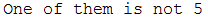
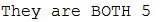
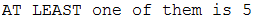
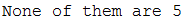
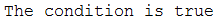
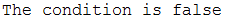
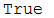

Fixed Navbar
3. Operators
Operators are used in expressions in order to use variables in a specific way. There are four main examples in Java: Logic, Arithmetic, Relational and Assignment operators.
3.1 Logic Operators
These operators aid in evaluating boolean expressions.
- &&
If you want to check if BOTH variable1 AND variable2 meet a condition, you would use the && operator which signifies AND.
Here is an example:
int number1=5;
int number2=6;
if(number1==5&&number2==5){
System.out.println("They are BOTH 5");
}else{
System.out.println("One of them is not 5");
}
Result when number1 is 5 and number2 is 6:
Result when both number variables are 5:
This shows that the && operator requires BOTH variables to meet their conditions for the desired block of code in the IF statement to run
- ||
If you want to check that AT LEAST variable1 OR variable2 meets a condition, you would use the || operator which signifies OR.
Here is an example:
int number1=5;
int number2=6;
if(number1==5||number2==5){
System.out.println("AT LEAST one of them is 5");
}else{
System.out.println("None of them are 5");
}
Result when number1 is 5 and number2 is 6:
Result when number1 is 7 and number2 is 6:
- !
If you want to reverse the boolean expression result you would use the ! operator as it makes a a true condition false and a false condition true.
Here is an example:
int number1=7;
if(number1==7){
System.out.println("The condition is true");
}else{
System.out.println("The condition is false");
}
Result when number1 is 7 in normal IF statement:
int number1=7;
if(!(number1==7)){
System.out.println("The condition is true");
}else{
System.out.println("The condition is false");
}
Result when number1 is 7 but ! operator is used in IF statement boolean expression:
3.2 Arithmetic Operators
These are simple to use operators that are involved in mathematical calculations.
- +
This + operators adds two values.
Here is an example and result:
int number1=6; int number2=3; System.out.println(number1+number2);

- -
This – operator subtracts one value from another.
Here is an example and result:
System.out.println(number1-number2);
- ++
This ++ operator increments a value by 1.
Here is an example and result:
System.out.println(++number1);
- --
This -- operator decrements a value by 1.
Here is an example and result:
System.out.println(--number1);
- /
This / operator divides a value by another.
Here is an example and result:
System.out.println(number1/number2);
- *
This * operator multiplies two values with each other.
Here is an example and result:
System.out.println(number1*number2);
3.3 Relational Operators
These operators are used to make comparisons between different values.
- !=
This operator will check if a value is not equal to another.
Here is an example and result:
int number1=6;
int number2=3;
if(number1!=number2){
System.out.println("True");
}else{
System.out.println("False");
}
- ==
This operator will check if two values are equal to each other.
Here is an example and result:
if(number1==number2)
- >
This operator will check if one value is greater than the other.
Here is an example and result:
if(number1>number2)
- <
This operator will check if one value is smaller than the other.
Here is an example and result:
if(number1<number2)
- >=
This operator will check if one value is greater than or equal to another.
Here is an example and result:
if(number1>=number2)

- <=
This operator will check if one value is smaller than or equal to another.
Here is an example and result:
if(number1<=number2)

3.4 Assignment Operators
Assignment operators involve changing a value in a variable.
- =
This will change the value of one variable into the value of another
Here is an example and result:
int number1=6; int number2=3; number1=number2; System.out.println(number1);

- +=
This will add a value from one variable to the value of another variable and ALSO assigns this new value as the value stored in the variable.
number1+=number2;

- -=
This will subtract a value from one variable by the value of another variable and ALSO assigns this new value as the value stored in the variable.
number1-=number2;

- /=
This will divide a value from one variable by the value of another variable and ALSO assigns this new value as the value stored in the variable.
number1/=number2;

- *=
This will multiply a value from one variable by the value of another variable and ALSO assigns this new value as the value stored in the variable.
number1*=number2;